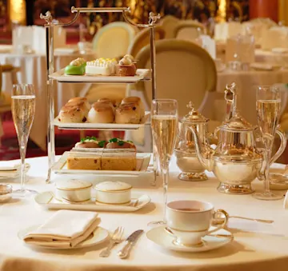
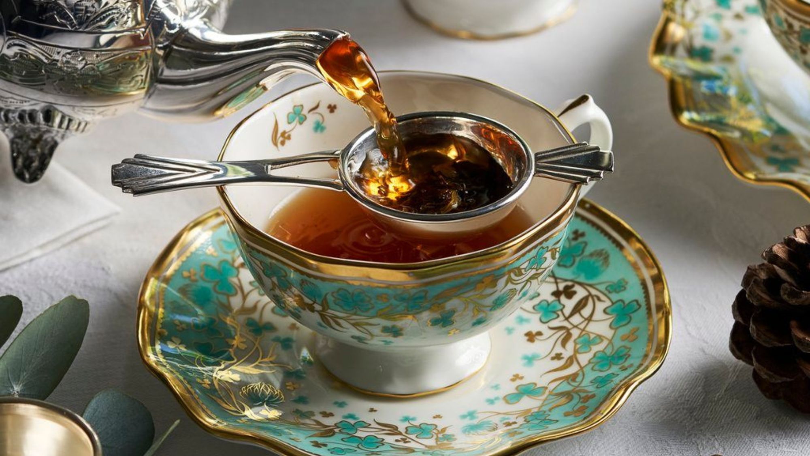
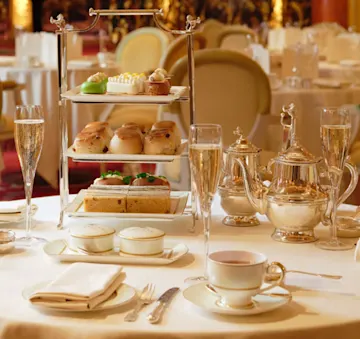
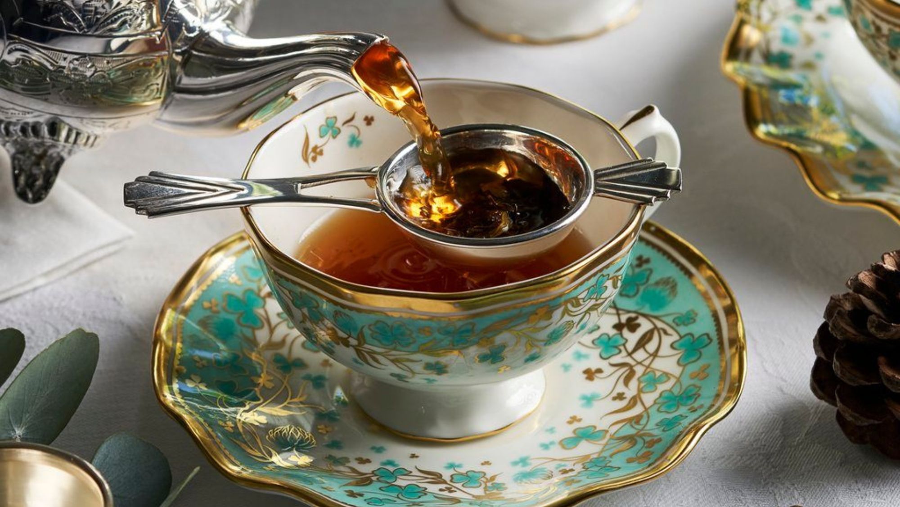

Pescado y patatas fritas 'Fish and chips'
La historia del pescado y las patatas fritas tiene un origen fascinante: el pescado frito proviene de los judíos exiliados de la Península Ibérica y las patatas fritas, de los belgas francófonos. Al unirlos, nació esta deliciosa combinación que se volvió icónica en Londres. Para disfrutar de la mejor experiencia, visita las auténticas tiendas de pescado y patatas fritas de la ciudad. ¡No te lo pierdas en tu viaje!"
Desayuno inglés completo
Este plato que se popularizó entre la población durante la Revolución Industrial y se ha convertido en una traidición común entre los ingleses. Es especialmente apreciado después de una larga noche o para prepararse para un día de trabajo intenso. Este manjar consiste en una combinación de salchichas, bacon, judías al horno, tomate, huevo frito, rebanada frita y, por supuesto, una buena rebanada de morcilla.
Pastel y puré Pie and mash
Originario del East End de Londres, el pie and mash es la piedra angular de la cocina obrera de la Revolución Industrial. Pasteles de carne, puré de patata esponjoso, salsa de perejil, y, quizá incluso algunas anguilas en gelatina. Muchas tiendas de tartas y puré siguen en sus edificios originales, proporcionando momentos increíbles a los londinenses seis días a la semana.
Té
¿Acaso has visitado Londres si no has pasado unas cuantas horas de ocio disfrutando de tazas de té, sándwiches y pasteles? Esta tradición británica tiene sus orígenes en el siglo XIX, pero sigue siendo un placer para los visitantes. Los mejores lugares para tomar el té de la tarde en Londres ofrecen una amplia gama de precios (y calidad), desde hoteles de lujo hasta pequeños salones de té y todo lo demás.